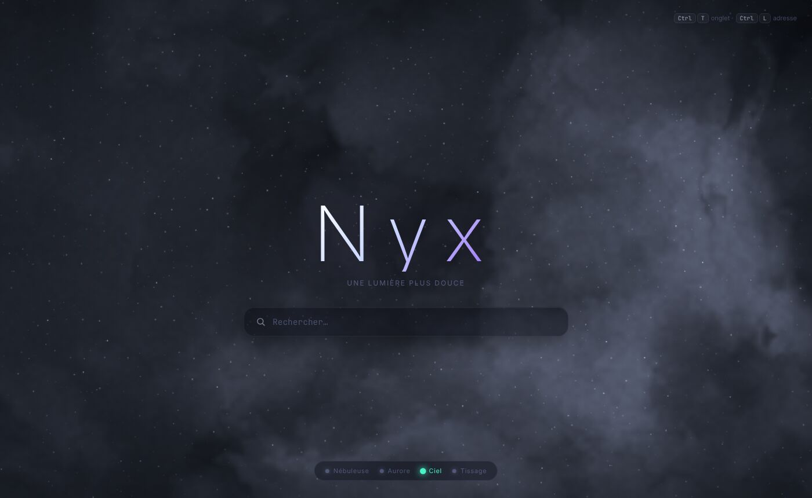
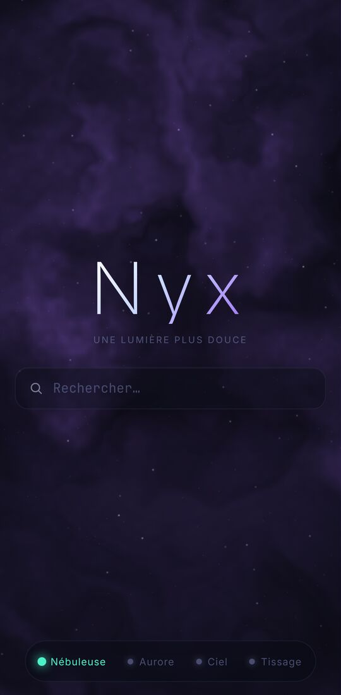

Aperçu
Le même calme, sur l'ordinateur et le téléphone.
Une nébuleuse qui suit la souris ou le doigt, une recherche qui ne vous suit pas. Ce ciel derrière la page, c'est le thème « Ciel » de l'app.


Protection
Plus sûr par défaut, sans rien régler.
Pubs et traqueurs bloqués NyxGuard
EasyList et EasyPrivacy sont intégrées. Les pages chargent moins de choses, donc plus vite, et les régies ne vous suivent plus de site en site.
Coffre chiffré SQLCipher
Mots de passe, favoris et historique restent chiffrés sur votre appareil. Nyx propose d'enregistrer un identifiant après une connexion et ne le remplit que sur le bon site.
Téléchargements vérifiés
Nyx contrôle le nom et le contenu de chaque fichier avant de le garder. Sur Windows, SmartScreen et Defender l'examinent aussi.
Léger, et à jour sans y penser
Nyx s'appuie sur le moteur web du système, mis à jour par Windows et Android. Rien de plus à télécharger ni à surveiller.
Installation
Deux minutes, sans compte.
Windows
Windows 10 ou 11 · 64 bits
- Téléchargez Nyx.exe.
- Ouvrez-le. Si Windows affiche « Windows a protégé votre ordinateur », choisissez Informations complémentaires, puis Exécuter quand même.
- Nyx vous présente le mot de passe principal : définissez-le, ou choisissez Plus tard.
Android
Android 8 et plus
- Sur le téléphone, téléchargez Nyx.apk.
- Ouvrez le fichier. Android demande d'autoriser l'installation : appuyez sur Paramètres, activez l'autorisation, revenez.
- Appuyez sur Installer. Nyx rejoint vos applis.
Questions
Avant d'installer
Pourquoi Windows affiche un avertissement ?
Windows prévient pour toute application qui n'a pas encore de certificat de signature payant, ce qui est le cas de Nyx pour l'instant. Le fichier est compilé automatiquement depuis le code source sur les serveurs de GitHub.
Où sont mes données ?
Uniquement sur votre appareil, dans un coffre chiffré. Nyx n'a ni compte ni serveur, et n'envoie rien. Sans mot de passe principal, le coffre est protégé par votre session, comme dans Chrome. Avec, personne ne l'ouvre sans lui.
Je peux reprendre mes favoris de Chrome ?
Oui, depuis les Paramètres de Nyx : favoris et historique sont repris directement. Pour les mots de passe, exportez-les d'abord depuis Chrome en fichier CSV.
Le streaming fonctionne ?
YouTube, Twitch et la plupart des sites vidéo, oui. Nyx utilise le moteur web du système, qui décode la vidéo avec la carte graphique.
C'est gratuit ?
Oui. Sans publicité et sans abonnement.